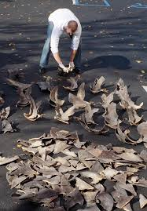
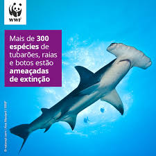
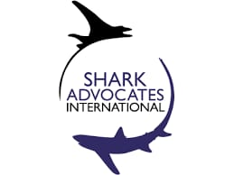

19.22.20_84e58e33.jpg)
 19.23.00_dc7cf6e3.jpg)
Motivos da caça:
Extração de carne, pele, óleo e nadadeiras.
Consequências ambientais:
Redução drástica nas populações de várias espécies de tubarões.
Muitas espécies estão ameaçadas de extinção.
Desequilíbrio nos ecossistemas marinhos, já que os tubarões são predadores de topo e controlam populações de outras espécies.

Prática do “finning”:
Consiste em cortar as nadadeiras dos tubarões e jogá-los de volta ao mar ainda vivos.
Considerada uma prática cruel e amplamente condenada por ambientalistas.
Medidas de proteção:
Criação de leis e acordos internacionais para proteger os tubarões.
Fiscalização é difícil, especialmente em águas internacionais.
Espécies de tubarões mais afetadas pela caça

Tubarão-martelo (Sphyrna spp.):
Muito visado por suas grandes nadadeiras.
Várias espécies do grupo estão criticamente ameaçadas.
Populações caíram drasticamente nas últimas décadas.

Tubarão-tigre (Galeocerdo cuvier):
Caçado por sua carne, couro e nadadeiras.
Considerado perigoso, o que também o torna alvo de caça esportiva.

Tubarão-branco (Carcharodon carcharias):
Protegido em muitos países, mas ainda sofre com pesca ilegal.
Valorizado como troféu em caças esportivas.

Tubarão-azul (Prionace glauca):
Um dos mais caçados no mundo, especialmente para o comércio de nadadeiras.
Apesar de ser uma espécie mais comum, sua população vem diminuindo.
 Tubarão-raposa (Alopias spp.):
Tubarão-raposa (Alopias spp.):
Caçado por suas longas nadadeiras caudais.
Tem reprodução lenta, o que dificulta a recuperação da espécie.
 Tubarão-baleia (Rhincodon typus):
Tubarão-baleia (Rhincodon typus):
Maior peixe do mundo, caçado em alguns países asiáticos por carne e óleo.
Espécie ameaçada, protegida por leis internacionais, mas ainda alvo da pesca ilegal.
Espécies de Tubarões e suas importâncias

Tubarão Branco:
Informações principais:
* Tamanho: Até 6 metros de comprimento.
* Aparência: Corpo robusto, coloração cinza-azulada nas costas e branca na parte inferior.
* Habitat: Oceanos temperados e tropicais, próximo à costa.
* Comportamento: Predador de topo, solitário e muito territorial.
* Dieta: Focas, leões-marinhos, peixes e outros tubarões.
Importância:
* Controla populações de presas, mantendo o equilíbrio ecológico.
* Indicador da saúde dos oceanos por ser predador de topo

Tubarão Tigre:
Informações principais:
* Tamanho: Até 5 metros.
* Aparência: Listras escuras no corpo lembram um tigre.
* Habitat: Regiões tropicais e subtropicais, próximo de recifes e estuários.
* Comportamento: Oportunista e agressivo, considerado um dos mais perigosos.
* Dieta: Onívoro – come peixes, tartarugas, aves e até lixo.
Importância:
* Limpa o ecossistema marinho ao consumir animais doentes ou carcaças.
* Regula populações de várias espécies.

Tubarão Baleia:
Informações principais:
* Tamanho: Até 12 metros (maior peixe do mundo).
* Aparência: Corpo cinza com pintas brancas.
* Habitat: Oceanos tropicais e subtropicais, águas abertas.
* Comportamento: Muito dócil, não representa perigo.
* Dieta: Filtrador – alimenta-se de plâncton, pequenos peixes e crustáceos.
Importância:
* Essencial para o ecossistema planctônico.
* Atrai ecoturismo, contribuindo para a conservação e economia local.

Tubarão Mako:
Informações principais:
* Tamanho:Até 4 metros.
* Aparência: Corpo fusiforme, olhos grandes e focinho pontudo.
* Habitat: Oceanos abertos, águas temperadas e tropicais.
* Comportamento: Muito rápido (chega a 74 km/h), excelente caçador.
* Dieta: Peixes grandes, lulas e outros tubarões.
Importância:
* Controla populações de peixes predadores.
* Indica a saúde dos ecossistemas pelágicos (de mar aberto).

Tubarão Martelo:
Informações principais:
* Tamanho: Até 6 metros (dependendo da espécie).
* Aparência: Cabeça em formato de "T" (cefalofólio).
* Habitat:Costas tropicais e subtropicais, vive em grupos.
* Comportamento: Social, caça em cardumes.
* Dieta: Raias, peixes ósseos e pequenos invertebrados.
Importância:
* A cabeça larga melhora sua percepção sensorial e caça eficiente.
* Papel fundamental no controle de presas bentônicas (de fundo).

Tubarão Raposa:
Informações principais:
* Tamanho: Até 6 metros, com metade do comprimento na cauda.
* Aparência: Cauda longa e em forma de chicote.
* Habitat: Águas abertas tropicais e temperadas.
* Comportamento:Usa a cauda para atordoar cardumes.
* Dieta: Peixes pequenos, lulas e crustáceos.
Importância:
* Técnicas de caça únicas auxiliam na regulação de cardumes.
* Essencial para a saúde dos ecossistemas pelágicos.
Concientização e ONGS
Os tubarões desempenham um papel crucial nos ecossistemas marinhos, contribuindo para a regulação das populações de outras espécies e para a manutenção do equilíbrio dos oceanos. Além disso, colaboram para a saúde dos ambientes marinhos ao controlar espécies invasoras e remover indivíduos doentes ou moribundos. Apesar de sua importância, os tubarões enfrentam diversas ameaças, como a pesca excessiva, a captura acidental em redes de pesca e a destruição de seus habitats. A pesca de barbatanas, em especial, é uma prática cruel que tem dizimado populações de tubarões em todo o mundo.
Diante desse cenário, e com a crescente conscientização social e política acerca da relevância dessa causa ambiental, têm surgido organizações não governamentais dedicadas à proteção dos tubarões. A seguir, serão apresentadas algumas das principais ONGs que atuam nessa área, abordando seu funcionamento, objetivos e demais aspectos relevantes.
![SEA SHEPHERD AUSTRÁLIA. Restaurando o equilíbrio. Sea Shepherd, [s.d.]. Disponível em: https://www.seashepherd.org.au/shark-defence-campaign. Acesso em: 30 jun. 2025.](Imagens/SEA shepard.jpg)
A Sea Shepherd Brasil participa de campanhas como “Shark Defense” e “Cação é Tubarão”, com foco na proteção dos tubarões e na conscientização sobre sua importância. A missão da campanha "Shark Defense" é defender, conservar e proteger os tubarões, a fim de manter os oceanos saudáveis. Mundialmente, os tubarões são ameaçados por diversas atividades humanas, como a retirada de barbatanas, a captura acidental, a pesca comercial, a degradação dos habitats, as mudanças climáticas e programas governamentais de controle e extermínio.
Na Austrália, a campanha busca expor a natureza destrutiva desses programas sancionados pelo Estado, por meio de investigações, documentação e divulgação de informações. Ao levar essa mensagem ao público australiano, a Sea Shepherd busca mobilizar apoio para a proteção a longo prazo dos tubarões, de acordo com as leis ambientais do país. Utilizando o pequeno barco Grey Nurse, a campanha monitora e denuncia o uso de redes e anzóis de captura (drumlines) em Queensland e Nova Gales do Sul, atuando como defensora ativa da remoção desses equipamentos. De abril a novembro, as costas australianas recebem a migração de baleias vindas da Antártida, mas muitas acabam presas nessas redes. Em 2022, sete baleias foram capturadas de forma desnecessária. Os governos de Queensland e Nova Gales do Sul tentam ocultar os bastidores desses programas cruéis e indiscriminados de extermínio de tubarões, mas a Sea Shepherd tem revelado imagens e dados que evidenciam seus impactos reais.

O WWF (Fundo Mundial para a Natureza) lidera, juntamente com a França, uma coalizão global de nove países e ONGs com o objetivo de proteger habitats e espécies de tubarões e raias, combatendo a sobrepesca e promovendo a conservação. Trata-se de uma das maiores e mais respeitadas organizações independentes de conservação ambiental do mundo, com mais de cinco milhões de apoiadores e uma rede global presente em mais de cem países.
A missão do WWF é conter a degradação do meio ambiente natural da Terra e construir um futuro em que a humanidade viva em harmonia com a natureza. Para isso, atua na conservação da diversidade biológica, na promoção do uso sustentável dos recursos naturais renováveis e na redução da poluição e do consumo excessivo. As ações do WWF são conduzidas internacionalmente por uma equipe central, em conjunto com a rede TRAFFIC, que apoia as equipes locais nos temas de conservação regional e nacional.
 A TRAFFIC é uma rede de monitoramento do comércio de vida selvagem, com foco em garantir que a comercialização de plantas e animais silvestres não represente ameaça à conservação. Trabalha em estreita parceria com suas organizações fundadoras, a UICN (União Internacional para a Conservação da Natureza) e o WWF, contribuindo de forma decisiva para alcançar metas de conservação, mobilizando as forças complementares dessas duas grandes entidades globais.
A TRAFFIC é uma rede de monitoramento do comércio de vida selvagem, com foco em garantir que a comercialização de plantas e animais silvestres não represente ameaça à conservação. Trabalha em estreita parceria com suas organizações fundadoras, a UICN (União Internacional para a Conservação da Natureza) e o WWF, contribuindo de forma decisiva para alcançar metas de conservação, mobilizando as forças complementares dessas duas grandes entidades globais. A Shark Advocates International é uma iniciativa sem fins lucrativos vinculada à The Ocean Foundation, dedicada à conservação de algumas das espécies marinhas mais vulneráveis e valiosas: os tubarões. Sua missão é liderar o avanço de políticas locais, nacionais e internacionais de conservação baseadas em evidências científicas, por meio da colaboração com organizações diversas e com tomadores de decisão.
A Shark Advocates International foi fundada por Sonja Fordham, uma ativista premiada e referência na conservação de tubarões há mais de duas décadas. Ela coordenou projetos na Ocean Conservancy entre 1991 e 2009 e liderou ações políticas da Shark Alliance na Europa entre 2006 e 2010. Sua atuação é voltada para a divulgação da situação crítica dos tubarões e para a defesa de políticas públicas embasadas na ciência perante órgãos de manejo pesqueiro e conservação da fauna.
Sonja Fordham esteve à frente de diversas conquistas marcantes na área, como os primeiros limites de pesca de tubarões e raias nos Estados Unidos, a proibição nacional e internacional da retirada de barbatanas (finning), a criação do Plano de Ação Internacional para Tubarões, a inclusão de tubarões na Convenção sobre o Comércio Internacional das Espécies Ameaçadas de Fauna e Flora Silvestres (CITES), o registro do peixe-serra na Lei de Espécies Ameaçadas dos EUA, a proteção de espécies ameaçadas de tubarões e raias europeus, a instituição das primeiras proibições internacionais de pesca de tubarões por organizações regionais de manejo pesqueiro e a elaboração de diversas resoluções da Assembleia Geral da ONU incentivando a conservação de tubarões.
Fordham também integra vários painéis consultivos sobre tubarões e raias e é coautora de diversas publicações sobre a gestão de pescarias de tubarões. Atualmente, atua como vice-presidente do Grupo Especialista em Tubarões da UICN e como presidente do Comitê de Conservação da Sociedade Americana de Elasmobrânquios.